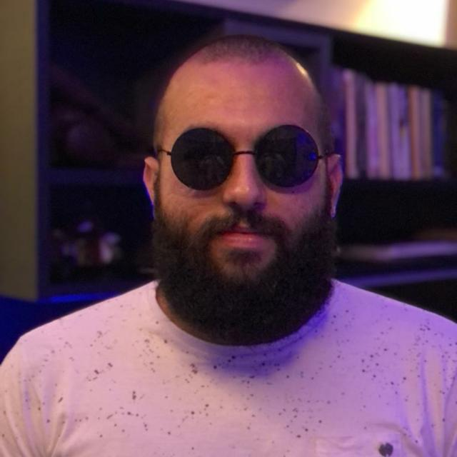

Gustavo da Silva Junior

Email: gustavo.junior1@alunos.unis.edu.br
Telefone: (35)99187-1661
Endereço: Alameda Vereador Darci Aparecido da Silva 245, Lagoa Seca
Objetivo
Atuar na area de desenvolvimento (Software ou Web)
Formações acadêmicas
- Ensino Médio completo - Colégio Laser (2015 - 2017)
- Ensino Superior incompleto - Inatel (2018 - 2020)
- Atualmente cursando ADS na Unis (2025)
Idiomas
- Português - Nativo
- Inglês - Intermediário